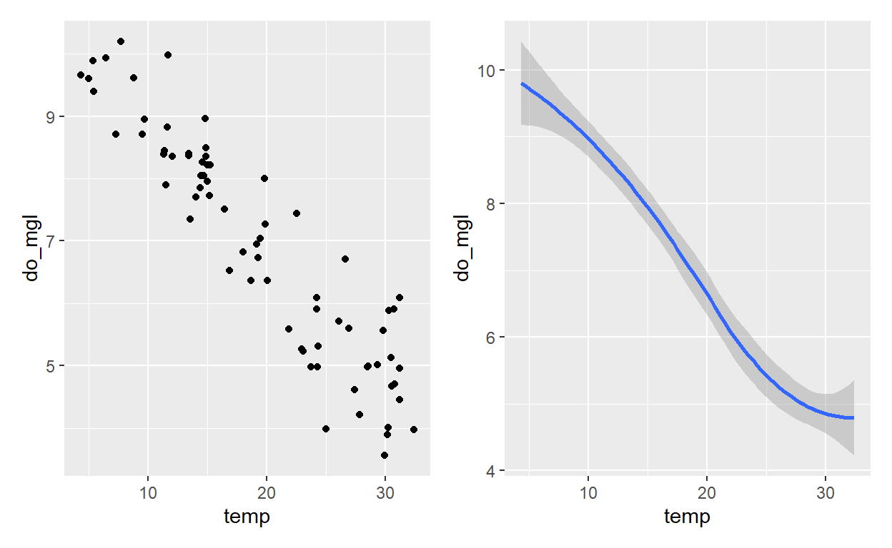

Data visualization is the first step in data exploration and is also a great place to start off when learning R because it can be very satisfying when learning to code - “I want to make a plot, and I did it!! We will be going through the basics of the ggplot2 package. This is one of the earliest packages in the tidyverse and it implements the”grammar of graphics", which is a logical system for describing and building graphs.
In this tutorial, you will apply what was reviewed in the first part of the workshop and get to creating some beautiful plots. A lot of these lessons follow the format presented in Chapter 3 of R for Data Science by Hadley Wickham and Garret Grolemund.
Let’s get started…
The main dataset in this workshop comes from six National Estuarine Research Reserves in the contiguous United States. The wq data frame contains monthly averages of water quality data (e.g., temperature, salinity, dissolved oxygen, etc.) collected through the System-Wide Monitoring Program (SWMP). Before working with your data, the first thing after loading it into R that you should always do is examine the data.
Next, just a bit of a lead into the data we’ll be working with today. I find it’s nice to have an idea pictured in your head before starting to create a data visualization. Let’s get that picture in there:
Run the code below to make a graph. Pay strict attention to spelling, capitalization, and parentheses!
ggplot(data = wq) +
geom_point(mapping = aes(x = temp, y = do_mgl))There are two main parts to this plot:
Initialize the figure with ggplot(). This creates a coordinate system for which you can then add subsequent layers. The first argument of this function is the dataset to use in the graph, so ggplot(data = <DATA>) creates an empty graph. (go on, you can try just plotting that)
You add layers with geom_ functions. Each geom_ function takes a mapping argument. This is how the variables are defined and mapped to visual properties. The mapping argument is always paired with aes() and the x and y arguments of aes() specify which variables to map to the x and y axes by looking at the <DATA> argument in the initial code.
This gives us the start of a nice template for future work with ggplot2:
ggplot(data = <DATA>) +
<GEOM_FUNCTION>(mapping = aes(<MAPPINGS>))Aesthetics are the visual properties of the objects in your plot (e.g., color, size, shape, etc.). Mappings describe how the aethetics should relate to variables in the data.
For example, you could have the points in a scatterplot be colored by their associated “state”. In visual space, we see the colors of each point, but in data space each of these colors represents a data value from the “state” variable.
Run the code below to see how adding the color = state argument inside the aes() call changes the original scatterplot:
ggplot(wq) +
geom_point(mapping = aes(x = temp, y = do_mgl, color = state), size = 3)Each geom comes with their own suite of aesthetics that it recognizes. You can use the ?geom_<insert> function to explore the associated aesthetics for each geom.
Run the code below as it is, but then change the location of the color = "blue" argument to outside of the aes() call. Click the “Solution” button to see the answer.
ggplot(wq) +
geom_point(aes(x = temp, y = do_mgl, color = "blue"))ggplot(wq) +
geom_point(aes(x = temp, y = do_mgl), color = "blue")You can also set the aesthetic properties of a geom manually, but be careful when doing so. Anything within the aes() call maps an aesthetic to a variable. This means that R will be looking for that variable and the data associated within it in order to create the plot. Outside of the aes() call, maps an aesthetic to a value.
Add color, size, alpha, and shape aesthetics to your graph. Experiment.
Choose from any of the variables in the dataset.
# original
ggplot(data = wq) +
geom_point(mapping = aes(x = temp, y = do_mgl, ___ = ___))# color
ggplot(data = wq) +
geom_point(mapping = aes(x = temp, y = do_mgl, color = state))
# size
# note that this is a continuous variable
ggplot(data = wq) +
geom_point(mapping = aes(x = temp, y = do_mgl, size = sal))
# alpha
# note that this is a continuous variable
ggplot(data = wq) +
geom_point(mapping = aes(x = temp, y = do_mgl, alpha = turb))What if you don’t want to add additional variables as aesthetics? If they are categorical variables, you can use facets! Facets create subplots that each display one subset of the data. There are two types of facets in ggplot2: facet_wrap() and facet_grid().
If you only have a single variable, it’s best to use facet_wrap(). If you have a combination of two variables, use facet_grid().
ggplot(data = wq) +
geom_point(mapping = aes(x = temp, y = do_mgl)) +
facet_wrap(~ coast, nrow = 1)
ggplot(data = wq) +
geom_point(mapping = aes(x = temp, y = do_mgl)) +
facet_grid(. ~ state)What did the period do in the facet_grid() example?
Using the wq data, plot temperature (temp) by month as a scatterplot and facet by state and coast. Play around with facet_grid() and facet_wrap().
What kinds of things do you notice?
ggplot(data = wq) +
geom_point(mapping = aes(x = month, y = temp)) +
___(. ~ state)# facet_grid
ggplot(data = wq) +
geom_point(mapping = aes(x = month, y = temp)) +
facet_grid(. ~ state)
# facet_wrap
ggplot(data = wq) +
geom_point(mapping = aes(x = month, y = temp)) +
facet_wrap(. ~ state)The geometric object (‘geom’) is the visual object used to represent the data. Two plots may share all the same data, but in using different geometric objects, the visual representation of the data will appear a little different. Take the following plots for example:

Notice how both plots have the same x and y variables as well as the data - they just have different visual objects (one is a scatterplot, the other is a smoothed plot).
Every geom requires a mapping argument and they each come with their own suite of acceptable aesthetics.